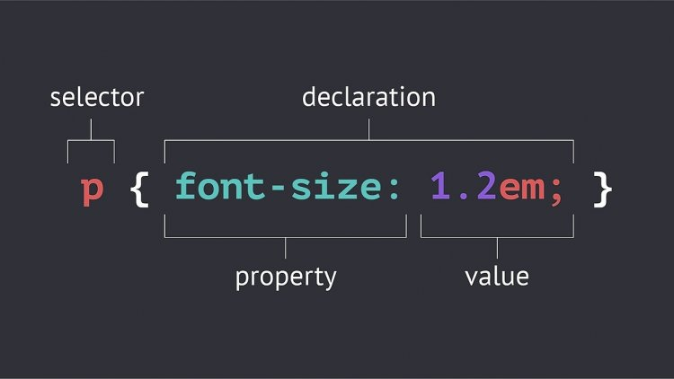

Selectors by Name
Name <h3>
Name <h4>
Selectors by ID
id="square-red" id="square-blue"Selectors by Class
class="circle" class="square"Several class Selector
"oval"&"green "rectangle"&"yellow "oval"&"red "rectangle"&"blueInvestigative Selector
- ul li:first-child
- ul li:nth-child(even)
- section ul li:nth-child(3)
- ul li:nth-child(even)
- .list ul li:last-child